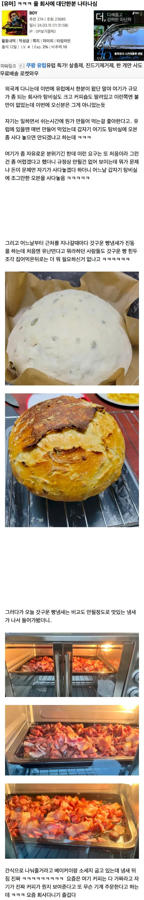

최근 입사한 사람때문에 요즘 회사다니기 즐겁다는 사람.jpg
댓글
흔한 여초식 주작인데 이걸 믿는 애들 뭐냐
주작은 아닌게 나 아는 프랑스 애도 저지랄하면서 크레페 만들어줌… 워딩마저 똑같아.
“한국의 크레페는 진짜 크레페가 아니야.”
해외사는데 회사에서 이탈리아애 직접 오븐에 피자구워서 먹음
오븐이라는게 뭐 공간만 있으면 다 할수 있는거라
유럽놈들 노동관은 놀라운 수준이더라
유럽 제조업이 망해가는 이유가 있음
유럽사는데 회사에 풀장비 갖춘 키친 있긴함..
회사에 요리 잘하는 사람 있으면 진짜 회사 다닐 맛 나긴 함 특이 케이스이긴한데,
예전에 다녔던 회사 직원중에 한분이 요리 자격증도 있고 취미 요리하던 분인데
첨에 회사 들어갔을때 점심시간 됐어도 직원들이 밥먹으러 안나가고 걍 계속 일하는거
그래서 걍 혼자 밥 먹으러 다니다가 물어보니깐
"아 ㅇㅇ님한테 일주일 기준으로 1~2만원만 내면 밥해주세요...." 해가지고
?????하고 탕비실 밥 크루 가입하고 나도 돈 똑같이 내봤는데
ㄹㅇ 걍 근처 식당가서 한끼 만원이상 내는거보다 훨씬 맛있더라...
그 회사 나오기 전까지는 계속 그 분이 해주시는 밥 먹음
간식같은거 잘 안먹어서 탕비실 들어갈 일이 없었는데 들어가보니깐 밥솥에 오븐에 별거 다 있더라
(직원들끼리 요리 메뉴 다양화를 위해 돈내고 샀다함)
축복임
여초식 주장은 아니고 우리회사에도 저런분들 3명있음. 회사의 힐러지
나도 홈카페 취미라서 아침에 아아나 라떼 몇잔 뽑아서 가고 그랬음 ㅋㅋ
집에 테이크아웃 플라스틱 컵 100개짜리 주문하고
일단 여자들 많은 부서에서 돈모아서 커피머신 산거는 봄 ㅋㅋㅋ 아무나 못만지게 구석자리에 둠
일은 안하고 하루종일 탕비실에서 부시럭부시럭거리고 있겠네
직장이 인생대부분을 보내니 이해간다..
아니 근데 하루에 개인 시간 빼서 저렇게 해 주면 고마운데 만날 그럴 것 같지는 않고 또 팀원들 일하는데 저것 때문에 빠질 수도 없고 가능한가 싶긴 하네.
회사에서 일을 해야지 저러고 앉았네
저개오래걸리는게아니라서 일널널하면 안될건없지
집에서 만들어 와서 예열하고 타이머 맞춰서 넣고 돌리면 끝임
취미로 요리하는 사람들에게는 금방 함
한국 제조업 회사는 좀 힘들거 같은데..
동생이 컴하하라 it쪽 이야기 들어보면 가능할거 같음.
업종따라서 진짜 분위기 자유로운 회사들 있음.
우리 회사도 it 업계인데 저런 분 있었다 ㅋㅋㅋㅋㅋ
농업센터알바할때 겨울에 오토클레이브 토양샘플 돌린다음 감자랑 고구마쪄먹었는데 ㅋㅋㅋㅋㅋㅋㅋ
저런거하려면 일 존나 잘해야함 하나 꼬투리 잡히면 개같이 털림.
ㅈ소면 가능하겠다 대기업은 보통 빵굽는 냄새 싫어하는 분들 한두분이라도 계심
사내게시판에 저런 썰 올라오면 지방은 저런거 없냐 본사만 누리냐 등등 분탕의 빌미가 됨
집 가까운 과장님이 아침 간식으로 맛탕, 토스트, 자몽에이드, 맥반석계란까지 직접 해오시는거 보고 이거 믿기로함
나도 저정도는 아니지만 비슷한류의 사람 있어서 저 느낌 이해감 ㅋㅋㅋ
사육당하는 느낌ㅋㅋㅋ
회사가 놀이터냐? 일안해?